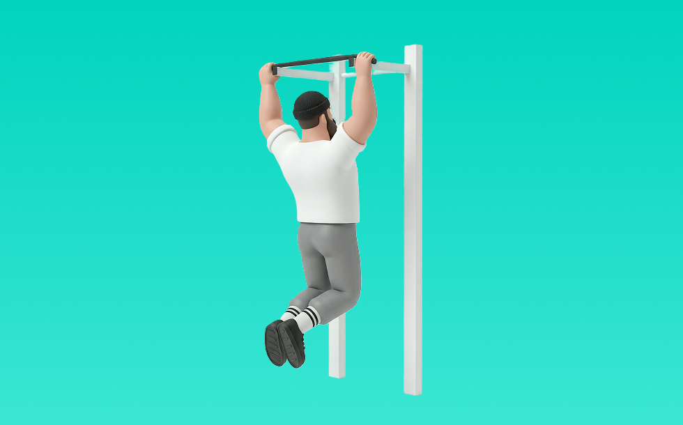

プルアップ

プルアップとは、自重を使って「引く」動作で背中（広背筋、僧帽筋、菱形筋）＋腕（上腕二頭筋）を鍛える種目です。順手（オーバーグリップ）で行うため、背中への刺激を出しやすいのが特徴です。器具なしで手軽にでき、フォーム次第で負荷調整しやすく、バーにぶら下がり、引き上げてゆっくり戻す動作を繰り返します。背中の厚み・広がり作りや姿勢改善が期待できます。
- 対象部位
- 背中
- 器具
- 自重
- 記録形式
- 回数
- 別名
- 懸垂 / pull up / チンニング(順手)
YouTube動画
-
【肩甲骨を整える】懸垂で背中に『効かせる』ための練習【スキャプラプルアップ】
-
【必見】本当にうまい人がやっている正しいプルアップシュート解説と習得までの５ステップ！アメリカの選手との差はコレ！※スキルじゃありません
-
ドリブルからのシュート（プルアップ）の基礎ドリル
-
懸垂の回数を0回から10回以上に増やす4つの方法【科学的根拠に基く】
-
【プルアップ】確実に背中に効かせるフォーム〜できない原因＆対策を解説
-
【初級〜中級編】誰でも出来る懸垂(チンニング)のやり方(ポイント＆注意点)です。
-
【初心者必見】懸垂とはどういう種目なのかどう負荷を上げるのか徹底解説します！
-
［世界一わかりやすく解説］キッピングプルアップKipping pull ups攻略テクニック｜クロスフィットでもっと上を目指すなら必須トレーニング【CrossFit2021日本代表】
-
How to do High Pull-ups? (What You Need To Know!)
-
懸垂が出来ない中年でも、懸垂で背中を鍛えられる！しかも上がれるように！代謝を高め、広背筋を作る！
-
【筋トレ】背中を鍛える懸垂のやり方【広背筋】
-
最強背中製造種目！懸垂・プルアップの解説
-
【初心者向け】ベントオーバーフロントプルアップの正しいフォーム
-
【懸垂(プルアップ)のやり方】ウォームアップと間違い編とバリエーションも
-
これで懸垂の悩み全て解決！スキャプラープルアップ(肩甲骨懸垂)の練習法！ [カリステニクス･自重トレ][モデル]
-
懸垂の効果をすぐに高めるワンポイントアドバイス！[カリステニクス･自重トレ]
YouTubeショート
-
正しい懸垂5つのポイント【筋トレ】
-
めっちゃ効く懸垂のやり方！フォーム解説
-
正しいラットプルダウン4つのポイント【筋トレ】
-
【初心者必見！！】懸垂で広背筋が効かない人はコレを試して！ #スキャプラプルアップ #筋トレ
-
【山本式】懸垂ができない人のための完全解説#shorts #youtubeshorts #筋トレ #懸垂 #背中トレ #筋トレ初心者 #筋トレ大学 #筋肉博士
-
懸垂は上がる必要はありません！上がれなくても背中を鍛えられる！ #筋トレ #トレーニング #懸垂
-
プルアップ（懸垂）背中を鍛える正しいやり方はこれ！
-
懸垂が劇的に軽くなる「背中の連動」3ステップ #筋トレ #懸垂 #背中トレ
-
コービーが語るプルアップの極意 #nba #nbahighlights #kobebryant
動作方法
- 胸を軽く張り、肩を下げて構える
- 肘を引く意識で、狙う部位に負荷を乗せる
- 戻し動作もコントロールして、負荷を抜かない
動作ポイント
- 腰を反りすぎない
- 肩が前に出ないようにする
- 勢いで引かない
ワンポイントアドバイス
- 腕ではなく背中で引く感覚を優先する
- 反動が増えたら重量を一段下げる
目的別回数設定
目的や体力に応じた一般的な目安です。無理のない範囲で調整してください。
- 筋力アップ
- 1〜5回
- 筋肥大
- 6〜12回
- 持久力アップ
- 13〜20回
YouTube動画について
動画はYouTubeの公開情報をもとに表示しています。内容は投稿者によるもので、Biggrによる監修ではありません。
アプリを入手
筋トレやトレーニングの記録はBiggrにお任せください。今すぐ無料で使い始められます。